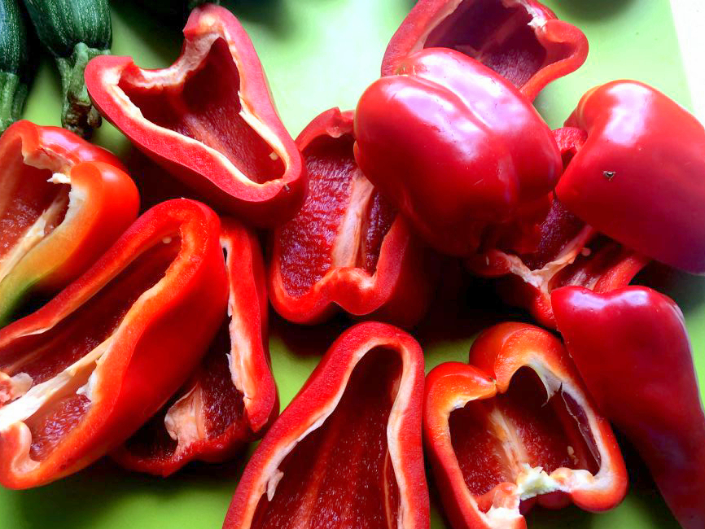
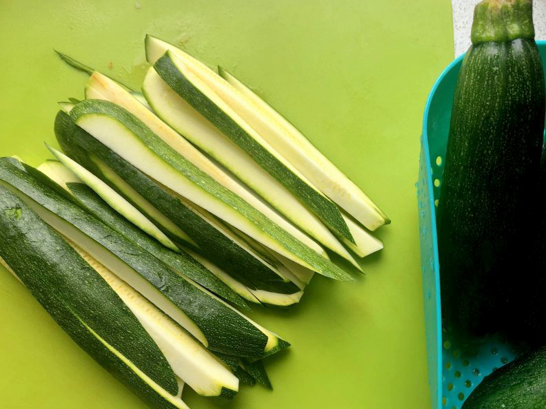
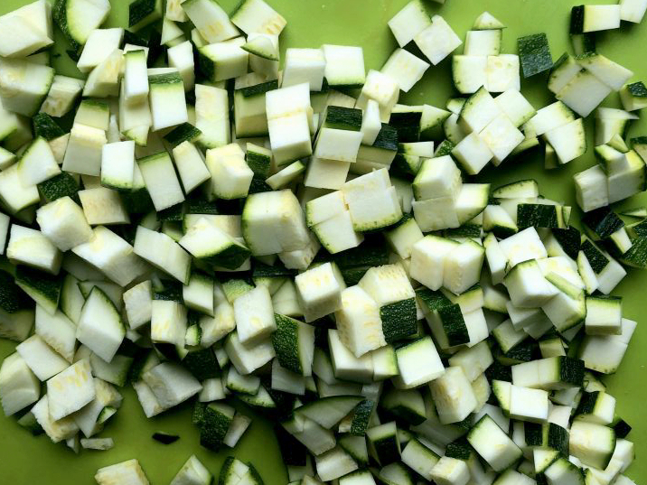
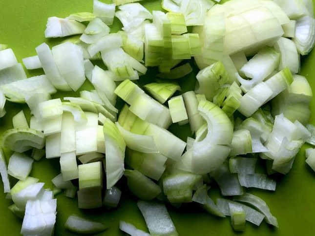
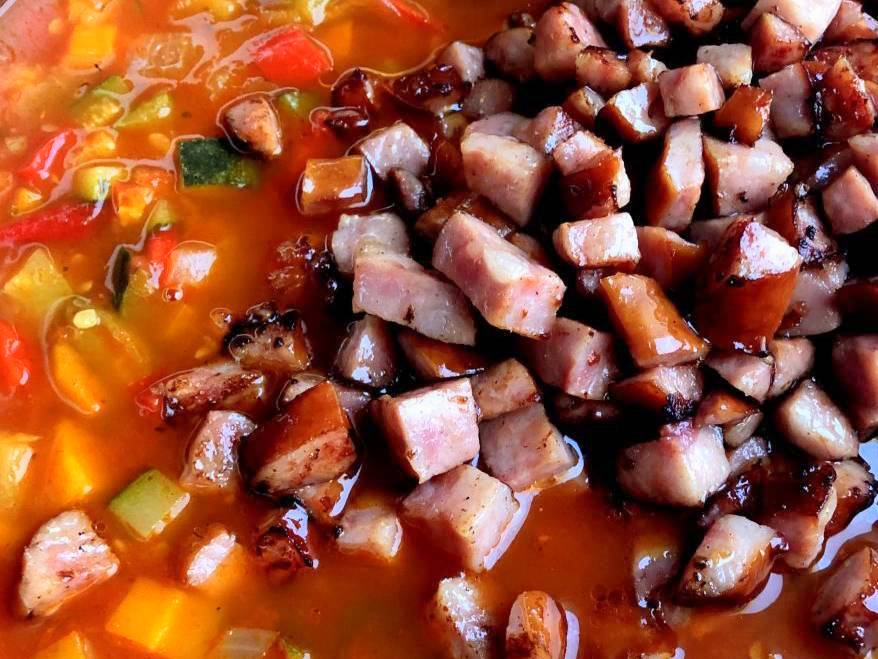
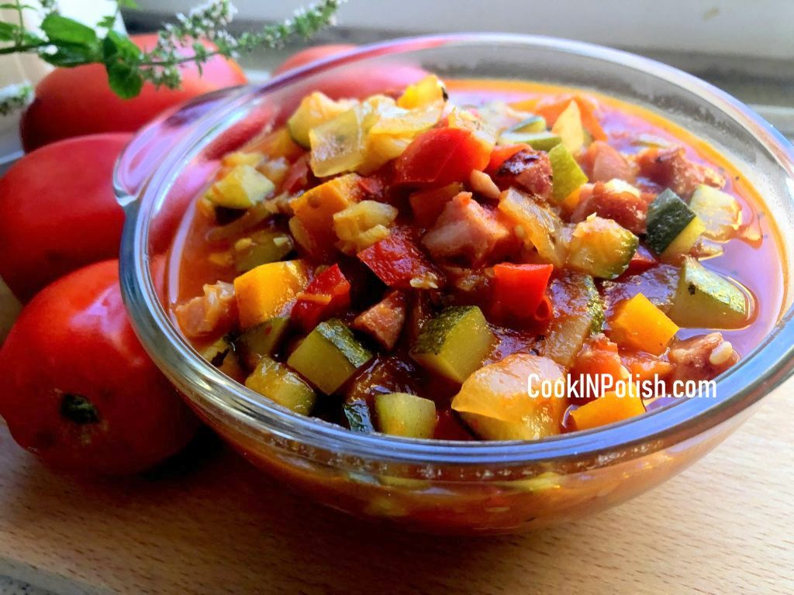

Gallery
How to serve

Ingredients - vegetables

Carrots

Red Pepper

Zucchinni

Diced zucchini

Diced onion

Tomatoes

Almost ready

Polish sausage

Sausage in a pan

Letcho with sausage

Just spices yet
Bon Appetit!
